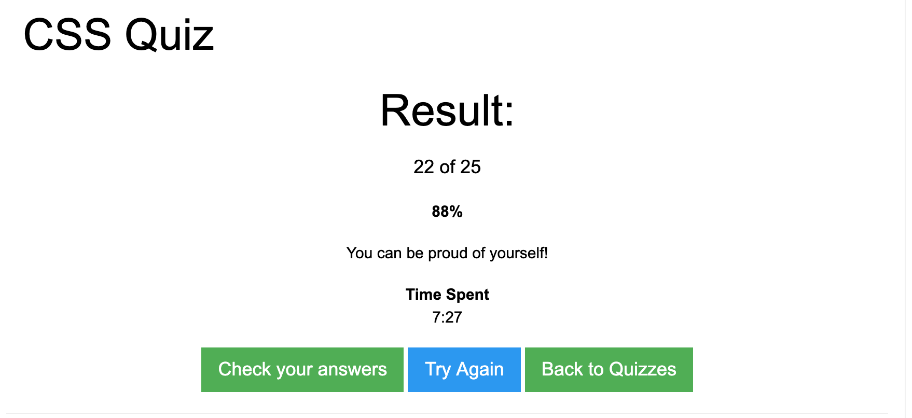

Lesson 2.1 - 20/10/2020
Tasks 2.1.1 - 2.1.4
In this lesson we learn HTML basics, understanding elements and how an element is structured as well as an HTML boiler plate and what the head and body are used for. We used H1s, tables , ordered and unordered lists, anchor tags and links, aswell an image tags. We also continued to familiarise with Github branching and commits.
Lesson 2.2 - 22/10/2020
Tasks 2.2.1 - 2.2.2
In this lesson we learnt CSS basics. We learnt about the structure of CSS, what the selector is and the declaration which has the property and the value. We were shown the various ways a styles can be added to HTML style tag, (inline, internal (with style tags) and an external style sheet) and the used for each of these options.
Lesson 2.2 - Takeaway task
w3 schools html quiz

Lesson 2.3 - 27/10/2020
Tasks 2.2.3 - 2.3.3
This week we looked more at CSS and learnt about more of the CSS selectors, classes and IDs. We also looked at the specificity of CSS. We looked at inline and block elements and spans, pseudo classes and also the how the CSS is read (cascading). We used more properties to decorate and style our HTML. Luke also taught us some useful shortcuts in VS code and showed us the shorthand for CSS for fonts.
Lesson 2.3 cont'd & 2.4 - 29/10/2020
Tasks 2.3.4 - 2.4.3 -
This week we learnt about the box model and how every element can be affected by padding, borders and margins. We also learnt about centering elements using margin auto.
In lesson 2.4 we started to learn about positioning and layout, including static, relative and absolute positioning. We created examples of the box model in task 2.3.4 and of relative positioning in task 2.4.3.
Lesson 2.4 - 03/11/2020
Tasks 2.4.4 - 2.4.5 -
This week we learnt about the z index. We practices placing an image on a page and adding a caption on top of the image.
Lesson 2.4 - Takeaway task
w3 schools css quiz 
Lesson 3.1 - 05/11/2020
Tasks 3.1.1 - 3.1.5
This week was about Javascript fundamentals, we learnt it's history and uses. In development it can be added directly to the HTML using the script element tag or by linking to an external document (similar to a External css sheet) which is the recommended way.
We learnt that JS uses statements (the instructions for the browser) and the structure of the statements and we practised the 'console.log' and 'alert' statements. We also learnt how to comment out in JS too, which is the same as commenting out in css for multiple lines or // for commenting out single lines.
We then went on to learn about variables, which is a named container which can be changed. Luke showed us how to 'declare' a variable and initialising the variable by adding a value. Without a value the variable is 'undefined'. The naming convention for declaring variables is to use camel case.
The datatypes that can be used when adding a value to a variable are:
- string
- number
- boolean
We then practised with arithmetic operators in task 3.1.4 and using string operators and concatenation in task 3.1.5.
Lesson 3.1 - Takeaway task
Complete task 3.1.6 which is to create variables for a meal total and a variable for tips and concatenate them. Also try to include the toFixed method to round the output to 2 decimal places.
Lesson 3.2 - 10/11/2020
Tasks 3.2.1 - 3.2.5
This week we continued with Javascript and learnt about JS Functions and Control flow. We learnt how to declare and invoke functions and how to use arguments within functions and their purpose, as well as using variables within functions. We practised this in tasks 3.2.1 to 3.2.3.
We discussed Global and local scope. In tasks 3.2.4 and 3.2.5 we started to look more at using boolean operator and Control flow and we practised this JS using If statements, Else and If Else statements.
Lesson 3.3 - 12/11/2020
Tasks 3.2.6 - 3.3.3
In this lesson we finished up the previous lesson about logical operators.
We then moved onto a Practical lesson applying Javascript. We created a calculator using functions, arguments, the result statement and console log to view the outcome and test the JS function worked.
We then learnt about the switch statement and applied our learning in a task 3.3.2 and finally in taks 3.3.3 we created a function with arithmetic operators.
Lesson 3.4 - 17/11/2020
Tasks 3.4.1 - 3.4.5
In this lesson we started to look at Javascript Loops, Arrays and Objects.
We learnt about the While and For loops and applied the learning by creating a simple counter from 1-10 and then a timestable calculator. Luke taught us that loops must alwasy have a Counter a condition and we must apply a change otherwise we could end up in an infinite loop, we also learnt about using the 'break' statement in a loop. We looked at arrays and the syntax for creating, updating and accessing an array and finally we moved onto JS Objects. I need to practise further to understand the concept of Objects and how to apply and use them as I have struggled a bit with task 3.4.5 and 3.4.6.
Lesson 3.5 - 19/11/2020
Tasks 3.5.1 - 3.5.3
This lesson was a JS practical to apply learning from last lesson of Loops, Objects and Arrays. We completed a shopping list task, then applied a discount using an if and else statement.
Lesson 3.6 - 24/11/2020
Tasks 3.6.1 - 3.6.2
The DOM tree - document Object Model , nodes
Lesson 3.7 - 26/11/2020
Tasks 3.7.1
Learning lesson, doing a filter and search on site using JS, CSS and HTML
Lesson 4.1 - 01/12/2020
Learning Static Site Generators
Static Site Generators (SSG)
Static sites are already built and they are able to use a JS framework like Jekyll, 11ty and Gatsby.
For Task 4.1 we created a github page and selected a Jekyll template. SSG's use Markdown in the editor. (instead of mark up like HTML) My Github page
Lesson 4 - 03/12/2020
Pseudo code